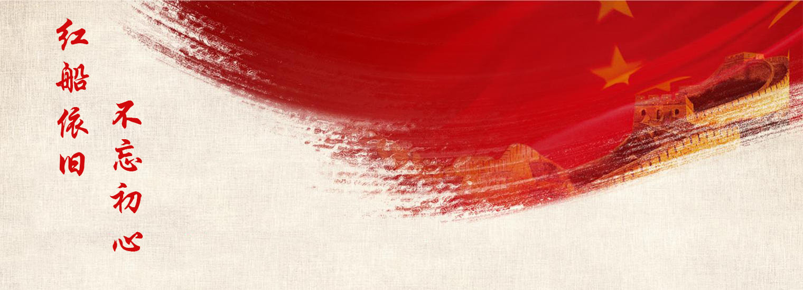
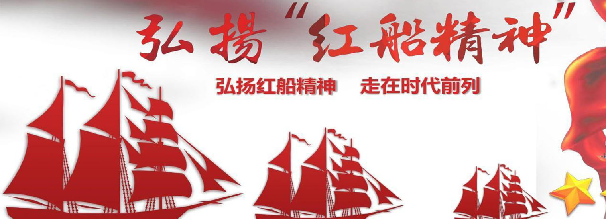
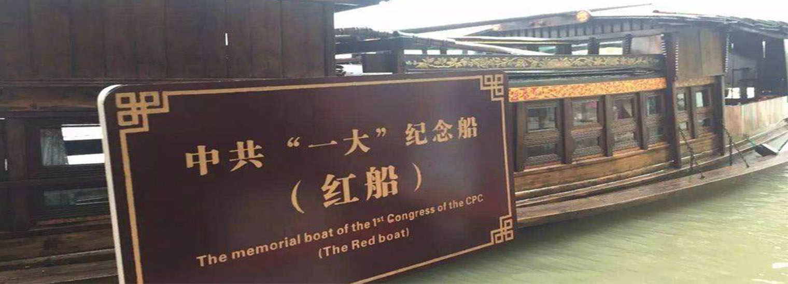
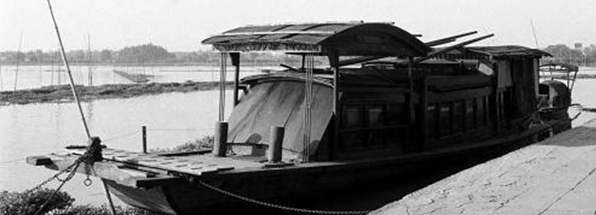
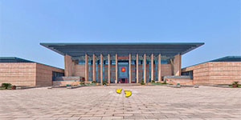
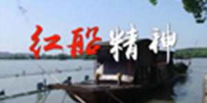
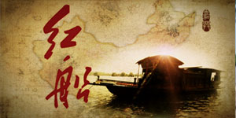

向 奋 不 顾 身 的 先 辈 致 敬
搜索
首页
精神内涵
精神介绍
红船简介
南湖会议
意义解析







精神内涵
开天辟地、敢为人先的首创精神
坚定理想、百折不挠的奋斗精神
立党为公、忠诚为民的奉献精神
精神介绍
弘扬“红船精神” 走在时代前列
作者：习近平 （《光明日报》 2005年6月21日）
“红船精神”同井冈山精神、长征精神、延安精神、西柏坡精神等一道，伴随中国革命的
光辉历程，共同构成我们党在前进道路上战胜各种困难和风险、 不断夺取新胜利的强大精神力量和宝贵精神财富。
红船简介
1921年7月底，中国共产党第一次全 国代表大会由上海转移到嘉兴南湖一艘画舫上继续举 行并顺利闭幕，庄严宣告了中国共产党的诞生。 这艘画舫因而获得了一个永载中国革命史册的名字——红船，成为中国革命源 头的象征。
南湖会议
中共一大会议实际上分为两个重要部分：一是中共一大上海会议，一是中共一大南湖会议。在嘉兴南湖游船上，中共一大代表通过了党纲、决议和工作计划，选举组成中央局，正式宣告党的诞生。
意义解析
“红船精神”是激励我们把握发展这一时代主题和党执政兴国第一要务， 大胆探索、创新创业的强大思想武器。 面对新挑战、新机遇和新形势、新任务，我们要坚持和发扬“红船 精神”，有敢于突破前人的勇气和智慧，自觉克服安于现状、不思进取的思想观念，坚持用创新的理论成果 武装头脑，用创新的思想观念谋划工作，紧紧扭住发展不放松，与时俱进，开拓创新，不断推进建设中国特 色社会主义的伟大事业。“红船精神”是鼓舞我们坚定共产主义理想和中国特色社会主义信念，不畏艰险、艰 苦奋斗的强大精神支柱。我们必须坚持和发扬“红船精神”，坚定理想信念，增强忧患意识，居安思危，处盛 虑衰，以共产党人的胸襟和眼界观察世界、判断形势，恪尽职守、脚踏实地，不怕艰难、坚韧不拔，矢志拼 搏、艰苦创业，努力谱写全面建设小康社会、加快推进社会主义现代化的新篇章。“红船精神”是鞭策我们牢 记立党为公、执政为民本质要求和全心全意为人民服务的根本宗旨，求真务实、一心为民的强大道德力量。 我们必须牢记“权为民所用、情为民所系、利为民所谋”的谆谆教诲，继续发扬“红船精神”，始终不渝地为最 广大人民谋利益，坚持人民利益高于一切的政德，真正干出有利于党和人民事业的政绩。
联系我们
客服电话：18258618745
商业沟通：2454200941@qq.com
发布地址：杭州科技职业技术学院
关于
关于本站
隐私政策
关注：
微博